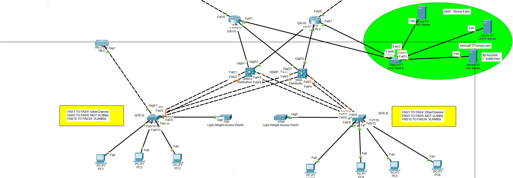
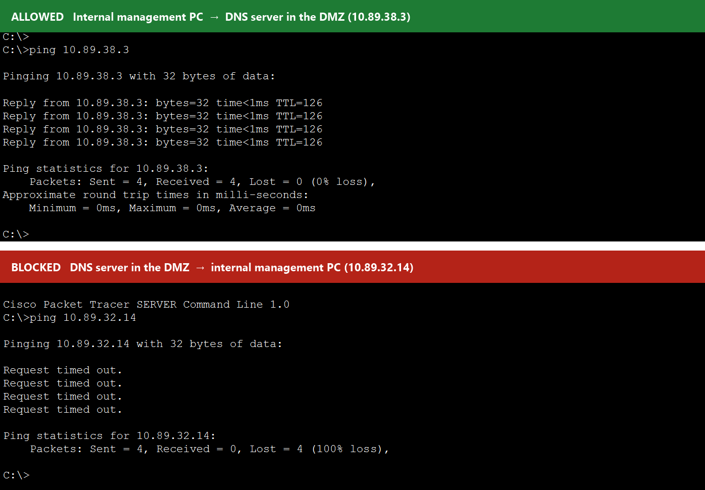
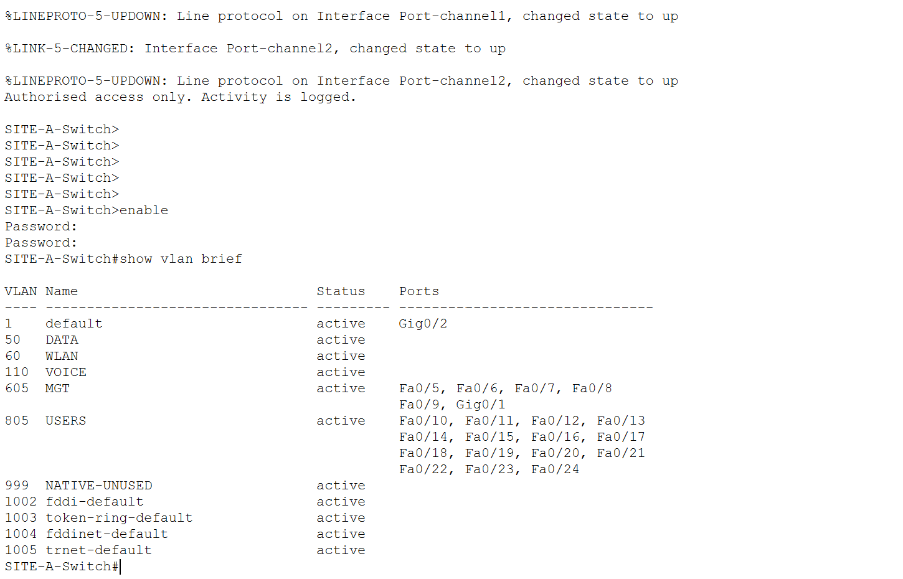

Technical skills

Network configuration & troubleshooting
Built and troubleshot a two-site network: VLANs, OSPF, EtherChannel, HSRP and a Wireless LAN Controller.
See the project →
Firewall configuration
Zone-based firewall that stops the DMZ reaching the internal network, plus inbound and outbound rules in Windows Firewall and iptables.
See the project →Security testing & reporting
Penetration-tested a Linux VM with Kali Linux, Nmap, Metasploit, Burp Suite and John the Ripper, recording every test in a full report.
See the project →Operating-system hardening
Evaluated a Linux system against CIS Benchmarks and recommended fixes. Completed the Windows 11: Security course.
See the project →
Configuration records & drawings
Documented device configurations and the network topology diagram for submission.
See the project →Network traffic monitoring
Analysed packet captures in Wireshark to find DHCP requests, device details and failed connections.
See the project →How I work
Teamwork & deadlines
Team leader in all my group projects. Delivered a full hackathon submission within the deadline.
Working independently
Sorted several hundred orders a day single-handedly. Trusted by my supervisor to train new staff.
Clear communication
Wrote a full penetration test report and presented a six-minute video pitch at a hackathon.
Shift work
Able to work shifts when required, including overnight.
Networking knowledge: completed the Network Security and Network and Cloud Technology modules. I do not hold a CCNA certification.